系统回查：上下文与工具执行
文件存下来了，本次模型就看见了吗？模型说要计算，工具就执行了吗？这两类问题都需要沿数据和回执往回查。下面从同源旧章选取关键机制与可运行例子，完整回查页另有缓存、框架和场景说明。
参数、输入、缓存与外部记录
先分清四个位置：模型参数、当前输入、推理缓存、应用外部保存的资料。参数通过训练更新；当前输入提供本次可处理的信息；KV 缓存复用某些计算；外部存储可以持久保存记录，但内容通常要被选取并放进输入，模型才能在这次任务中据此回答。
电脑内存（RAM）和硬盘也不是同一类存储，不能把“传统电脑内存＝硬盘”作为类比。关掉页面是否丢记录，取决于应用保存机制，不能归结为模型必然失忆。
保存之后，还要选择
| 信息 | 保留办法 | 需要检查 |
|---|---|---|
| 当前目标和约束 | 维护任务状态，按需带入 | 是否已被用户更正或撤销 |
| 正在使用的证据 | 保留原句、编号、版本 | 是否适用、是否相互冲突 |
| 较早对话 | 原始记录外存，选择必要部分 | 摘要是否漏掉否定和条件 |
| 可重新读取的文档 | 外部保存并检索 | 权限、版本、定位是否可用 |
这些做法没有固定的成本加成或“90% 信息保留率”。保留率必须先定义要保留哪些事实，再用实际样本检查。

先留出输出预算
对于使用共享上下文上限的接口，一次简化预算是 输入用量 + 预留输出 ≤ 窗口上限。例如人工设定上限 4096、预留输出 512，输入预算就是 3584 token。实际产品还可能有独立输入/输出上限，以及工具定义、模板、图像或推理用量的特别规则，应按接口核算。
输入预算应覆盖任务、规则、历史、检索资料、工具定义与回执、当前问题和消息封装等。先用所选 tokenizer 或服务用量估算；超限时说明缩减、检索或拆分的取舍，不默默删除关键条件。
压缩后，条件还在吗？
| 方式 | 可以保留什么 | 常见损失 |
|---|---|---|
| 总结 | 主要问题和进度 | 细节、来源和限定可能消失 |
| 要点 | 未解决事项及相关依据 | 关系与适用范围可能被拆散 |
| 表格 | 字段、单位、原句编号 | 空值、否定和跨行条件可能丢失 |
纸上做一次：原句“周六开放，节假日除外，地点待确认。”若压成“周六在社区阅览室开放”，既漏了例外又补造地点。较忠实的记录是“周六开放；节假日除外；地点未知”，并保留原文编号。token 数和费用要实际计算，不能由表格形式推算节省比例。
请求到回执，中间发生什么？
下面是本地教学协议，不是通用 API 的字段格式：
{
"id": "multiply-1",
"name": "multiply",
"arguments": { "a": 12.5, "b": 8 }
}
程序先检查工具名、字段、类型和允许范围，再执行运算。成功回执带同一调用标识；失败回执没有可用结果。接口可能支持多个调用或不同消息类型，按所用版本保留正确的调用/结果关联。

完成之外，还有哪些停止条件？
一种常见循环是：组装当前输入 → 模型给回答或请求 → 程序校验并执行工具 → 记录回执 → 根据结果继续或结束。也可以在确定步骤中直接返回工具结果，不必每次都让模型再解释一遍。
除了完成任务，还应有失败、取消、预算耗尽、需要补资料或等待已授权确认等结束路径。循环不是无限“直到成功”，模型说完成也不等于实际验收通过。
纸上追踪本章商品任务：查价成功后结果进入乘法；查价失败则停止，不能用默认价格继续。乘法成功才有总价；两个步骤都没有下单动作，因此总价成功也不能汇报“订单已提交”。
在本地运行两步工作流
在仓库根目录运行 node book/llm/examples/tool-workflow.mjs。程序先查人工目录里的练习册单价，再把真实查价结果交给乘法；它是固定工作流，没有模型自主规划、联网或下单。源码中的工具白名单和类型检查先于运算，不执行输入里的代码。
lookup-1: lookup_price → succeeded, 12.5
multiply-1: multiply → succeeded, 100
最终状态: done, 总价: 100
纸上追踪：单价 12.5，数量 8，乘法得到 100；改成人工目录里不存在的商品，查价失败，总价为空，乘法不执行。把实际查到的价格改成 7.25，8 件应得到 58，检查流程有没有把 100 写死。数值为教学材料，使用浮点数，不代表现实报价。
超时与取消之后，能否重试？
模型可能选错工具、参数无效或误判完成；外部服务可能失败、延迟或返回过期结果。任务较长时，状态恢复还可能导致重复执行。保留调用标识、实际回执、次数与时间预算，在明确的停止条件下运行。
超时尤其要区分“没有拿到结果”与“操作没有发生”。对可能写入环境的工具，先查询执行状态，必要时使用工具支持的幂等键，再决定能否重试；不能盲目重复下单或付款。本课超时是教学分支，没有真实远程操作。
自己检查一次
- 文件已保存但没有进入这次输入，能否据此说模型已读到？
- 缓存命中是否让资料不再占窗口，或等于模型参数已更新？
- 共享上限 4096、输出预留 512，输入预算是多少？这是不是两个实际模型的规格？
- 请求 JSON 合法，是否就能汇报工具完成？取消会撤销过去的操作吗？
核对依据：保存不等于本次提供；缓存复用计算，不增加窗口或训练参数；例子输入预算为 3584 token，仅是人工设定；还要校验、执行和成功回执，取消也不自动回滚已发生的步骤。
来源与范围
缓存机制见 Transformers 文档，跨请求规则以具体服务文档为准；上下文位置效应见 Lost in the Middle。Manus 原文是团队经验，不是本课测评。ReAct研究交错的推理与动作。实际模型练习仍采用 DeepSeek V4.1 Flash 与 Kimi K3，未采集本章模型输出或费用实测。